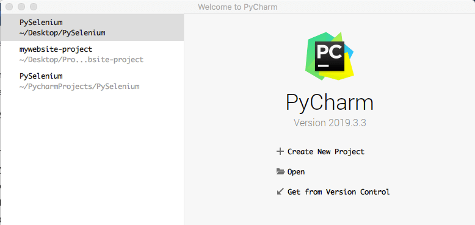
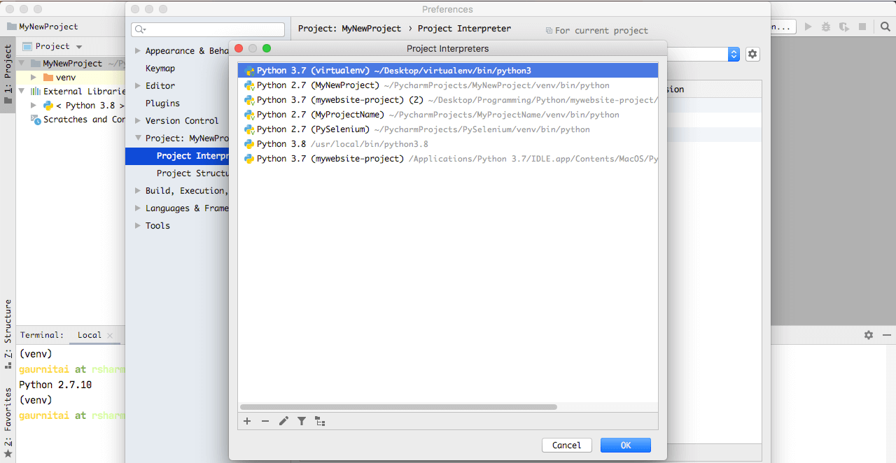
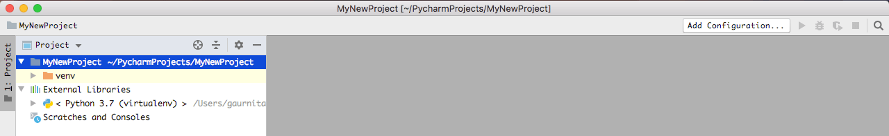

When there is a question of productivity and efficiency while programming, one always go for one of the Integrated Development Environment (IDE) or Text editors. Now, the most challenging part is to set up our own development environment within IDE or Text editors. So, in this article, we will be exploring how to set up a Python environment within IDE & Text editor.
There are various IDEs and Text editors available in the market for various programming languages. To know more about some of the most popular and commonly used IDEs & Text editors among developers community, please refer our post
Let's explore the most popular & commonly used IDEs & Text editors for coding
Here, we are not going to cover all of them but I would like to focus mostly two of them which are having great demand when it comes to Python development.
Pycharm (IDE)
VS Code (Text Editor)

Setting up a Python environment in Pycharm IDE
Before starting make sure you have Python installed on your system. If not, please refer our article to set up Python at: Python installation & setup on Windows/Mac/Linux
Secondly, you have to make sure the Pycharm Community version is installed on your system. If not, please refer our article on how to download Pycharm at: Let's explore how to set up Pycharm on Mac/Windows/Linux
- Launch Pycharm application and create a new project by clicking on
+Create new project

- Set the project name and click on the arrow button
>to expand the virtual environment setting. - If you notice, you can see it is picking by default the system python version and creating a virtual environment for our project
- Click on the
OKbutton and wait for a while till the time the project set up is done. - On the left panel of the project explorer window, you can find the name of our project -
MyNewProject - Now to set the new python environment for this project, go to
Preferences - Select
Python InterpreterunderPython: MyNewProject - On the right panel, you will see a new window with the current Python environment of 2.7
- Click on the up-down arrow button and click
Show All - A new window will open and you will find all the Python environment that you would have created on your system or may be installed on your system. 
- If you do not find any other Python environment than default one then click on
+icon at the bottom left - A new dialog box will open, just click on the
Existing environmentand click on box with dot... - Now select the folder of your virtual environment from your local system and navigate to the python3 file within bin
folder and click the
OKbutton - Select the recently added Python environment from options and click
OK - Click on
Applyand thenOKbutton - Now go to project explorer panel on left and expand
External Librariesand you will see our new Python version that we just set


Setting up a Python environment in VS Code
Before starting make sure you have VS Code installed on your system. If not, please refer our article to set up Python at: Text Editors installation & setup on Windows/Mac/Linux
- Launch VS Code application and open your Python project in it
- Click four square on the left panel of VS Code and install
Pythonplugin - Press
Ctrl+Shift+P(for windows) &Cmd+Shift+P(for mac) and
typePython Interpreterand click onSelect Interpreter - From the list of Python Interpreter options, select one of the them based on your project
- After slecting one of the interpreter, you will find a new folder with name
.vscodeget created on left panel - Open the
settings.jsonfile from .vscode folder and you will find the recently selected Python interpreter - From next time onwards, for the same project if you want to change Python interpreter simply change the path in
settings.jsonfile - If everything went well then you should see recently selected Python interpreter at the bottom left corner of VS Code